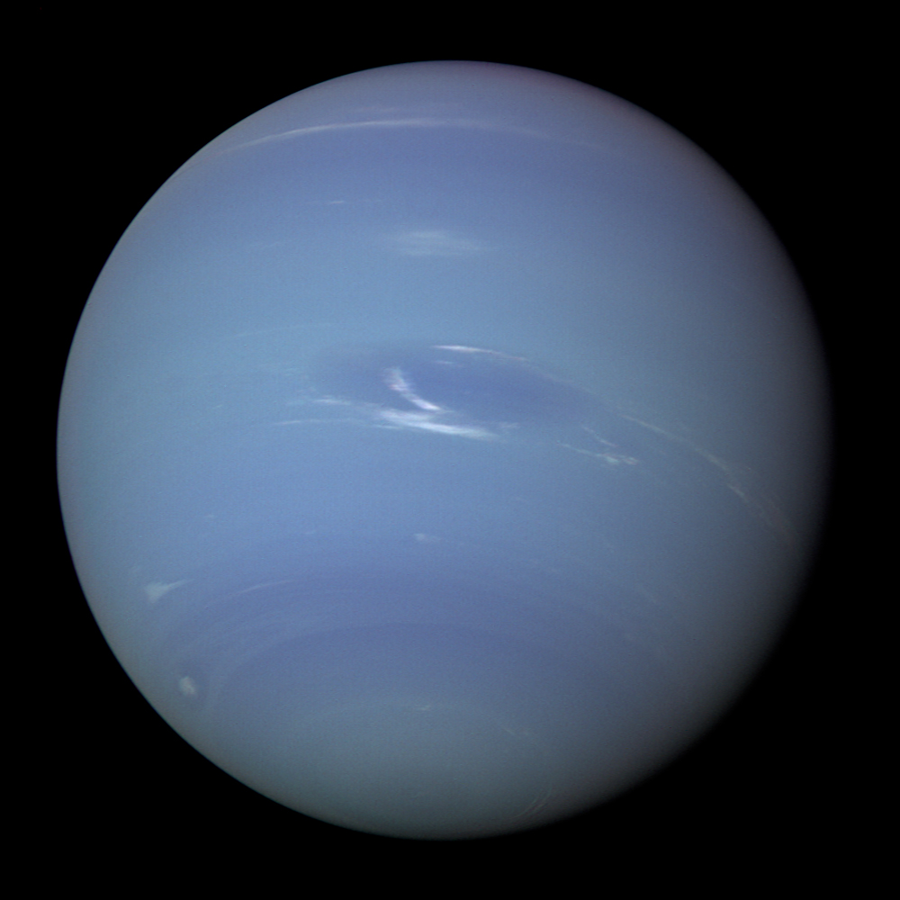

| Орбитальные характеристики |
| Перигелий |
4 452 940 833 км 29,76607095 а. е. |
| Афелий |
4 553 946 490 км 30,44125206 а. е. |
| Большая полуось (a) |
4 503 443 661 км 30,10366151 а. е. |
| Эксцентриситет орбиты (e) |
0,011214269 |
| Сидерический период обращения |
60 190,03 дня 164,79 года |
| Синодический период обращения |
367,49 дня |
| Орбитальная скорость (v) |
5,4349 км/с |
| Средняя аномалия (Mo) |
267,767281° |
| Наклонение (i) |
1,767975°
6,43° относительно солнечного экватора |
| Долгота восходящего узла (Ω) |
131,794310° |
| Аргумент перицентра (ω) |
265,646853° |
| Чей спутник |
Солнце |
| Спутники |
14 |
| Физические характеристики |
| Полярное сжатие |
0,0171 ± 0,0013 |
| Экваториальный радиус |
24 764 ± 15 км |
| Полярный радиус |
24 341 ± 30 км |
| Средний радиус |
24 622 ± 19 км |
| Площадь поверхности (S) |
7,6408⋅109 км² |
| Объём (V) |
6,254⋅1013 км³ |
| Масса (m) |
1,0243⋅1026 кг 17,147 земных |
| Средняя плотность (ρ) |
1,638 г/см³ |
| Ускорение свободного падения на экваторе (g) |
11,15 м/с² |
| Вторая космическая скорость (v2) |
23,5 км/c |
| Экваториальная скорость вращения |
2,68 км/с 9648 км/ч |
| Период вращения (T) |
0,6653 дня[9] 15 ч 57 мин 59 с |
| Наклон оси |
28,32° |
| Прямое восхождение северного полюса (α) |
19 ч 57 м 20 с |
| Склонение северного полюса (δ) |
42,950° |
| Альбедо |
0,29 (Бонд) 0,41 (геом.) |
| Видимая звёздная величина |
8,0—7,78 |
| Угловой диаметр |
2,2"—2,4" |
| Температура |
| мин. сред. макс. |
| уровень 1 бара |
72 К (около −200 °С) |
| 0,1 бара |
55 К |
| Атмосфера |
Состав:
- 80±3,2 % водород (H2)
- 19±3,2 % гелий
- 1,5±0,5 % метан
- ~0,019 % дейтерид водорода (HD)
- ~0,00015 % этан
Льды:
- аммиачный
- водяной
- гидросульфидно-аммиачный
- метановый
|
|

Нептун с «Вояджера-2».
|